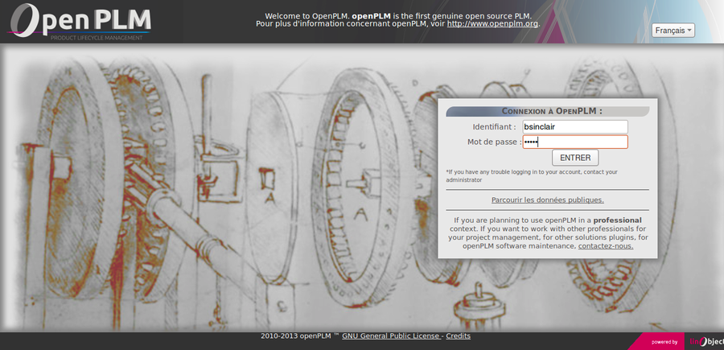
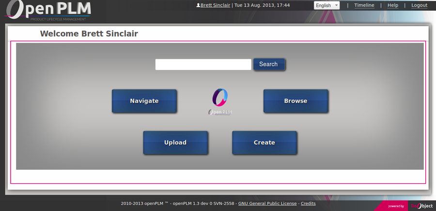

3.1. Introduction
OpenPLM is a product oriented PLM solution.
A product oriented PLM (Product Lifecycle Management) solution unifies
all activities of the company in an ECM which structures data around the product.
OpenPLM features a full web and user-friendly interface.
OpenPLM is Free and Open Source Software.
This means that all our work is free to use, modify and redistribute.
Notable changes:
- Wiki syntax and Page document
- Avatars
- Interface enhancements
3.2. What’s new for users
3.2.1. Enhanced Login page
We improve the style of the Login page.

3.2.2. Enhanced Home page
You access to Search engine directly from Home page.

3.2.3. Wiki syntax
It is now possible to write rich formatted comments and other text
(description, technical details, etc.).
The syntax is based on Markdown and it supports:
- titles and subtitles
- images
- bullet and ordered lists
- tables
- special links (to a part, document, user and more)
The syntax is documented on this page.
A visual editor is available:
3.2.4. Interface enhancements
All buttons have been redesigned.
Their background colors depend on the consequences of their actions.
For example, delete buttons have a red background and promote buttons
have a green background.
3.2.5. Parts and documents: new description field
Parts and documents have now a description field.
Now parts, documents, groups and ECRs have a name and a description fields.
This field supports formatted content and is indexed by the search engine.
3.2.7. Avatars
Each user can now upload an avatar.
Avatars are visible on:
To upload your avatar, simply edit your personal data on your user’s page.
3.2.8. Check-in improvements
A click on the check-in button immediately triggers the file selector.
And the file is uploaded when the file selector is validated.
3.2.9. Search: all types, official objects
It is possible to run a query matching any types of object (parts, documents,
groups, users, ECRs).
The drop down menu used to select the type is replaced by a left panel.
This panel is divised in two sections. The first section gives
direct access to main types (All, Part, Document, Group, User and ECR).
The second is fold and gives access to part or document subtypes
(Document3D, ElectronicPart, etc.).
It is possible to search for only official objects.
Moreover, the search engine suggests a spelling correction when no results
are returned.
3.2.10. Timeline: browse by date and filtering
The timeline has been improved. It now displays all events which happened
during a given period.
The previous version displayed a fixed number of events.
Moreover, it is possible to filter events based on their type (part, document and/or group)
and by their author.
3.2.11. Navigate: full screen display
You can now display the navigate view in full screen mode.
3.2.12. 3D view: full screen display and BOM
The assembly tree of a STEP file is now displayed as a treeview.
You can now display the 3D view in full screen mode.
3.2.13. Other enhancements
- The Document3D type is automatically selected if a CAD file is uploaded
- Navigate supports ECRs
- The webdav application is now compatible with Windows 7 client
- All comments have a permalink
- Histories and timeline record comments
3.3. What’s new for administrators
OpenPLM now requires Django 1.5.
Some dependencies and the settings file must be upgraded.
Read the instructions before upgrading
your installation.
3.3.2. New application: richpage
The richpage application adds a new type
of document, Page which has a dedicated tab to a formatted content.
3.4. What’s new for developers
3.4.1. Django 1.5
Django 1.5 adds custom user model. OpenPLM still uses the User model
provided by Django and a separated profile (UserProfile).
To get the profile of a user instance, you must now access the
user.profile attribute instead of calling user.get_profile().
Static files are now located in app/static/ directories
instead of the media/ directory.
HttpResponse which takes a file or an iterator are now
instances of StreamingHttpResponse.
All DateTime fields are now timezone aware.
3.4.2. Rich text | Wiki syntax
You can now add rich text support to any TextField.
Rich text | Wiki syntax explains how to add this support and how
to add its own syntax.
3.4.4. HTTP API
The http_api has new routes:
3.4.5. References
The new module references adds functions to parse and generate
a new reference for a part or a document.
3.4.6. Celery tasks
Task are now executed after the current database transaction.
If the transaction failed, tasks are not executed.
3.4.7. Models
PLMObject has now a description field.
If one of your models already has a such field, you should create
a migration before upgrading your installation. The software
application contains a migration that copies the content
of an existing description field.
Document subclasses may implement the Document.get_creation_score()
classmethod. It is used to determinate which document type is chosen
after an upload.